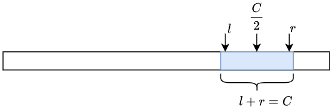
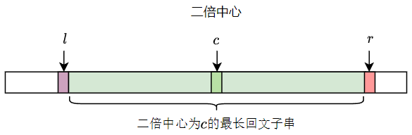
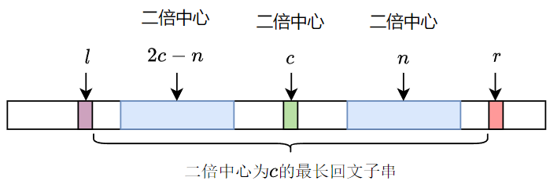
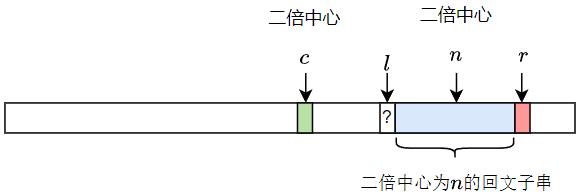

最长回文子串
条评论题目大意：
输入多个字符串，对于每个字符串输出一个整数 \(N\)，表示该字符串的最长回文子串。
输入
最多 \(30\)
个字符串，每个字符串长度不超过 \(1000000\)，最后一个字符串为
END(该字符串不需要处理)。
输出
对于每组测试用例，输出以"Case N: "作为开头，N是测试用例的编号, 然后是对应字符串的最长回文子串。
样例输入
1 | abcbabcbabcba |
样例输出
1 | Case 1: 13 |
求解最长回文子串的经典算法为 Manacher 算法。
定理 1：如果某个字符串本身是回文串，对于其内部的任何一个回文子串 \(s\)，它的 \(s\) 的镜像串 \(s'\)也是回文子串，并且 \(s = s'\)。
这是由回文串本身的对称性决定的，对 \(s\) 做中心对称变化，然后再做平移，就会得到 \(s'\)。由于对回文串做对称变换保持不变，所以 \(s\) 跟 \(s'\) 相等。
当回文串的长度为偶数时，回文串的中心并不是某一个字符，原版的 Manacher 算法为了解决这个问题，通过对原字符串添加特殊字符的方法，使得每一个字串长度都是奇数。实际上这一步是不必要的，因为找回文中心的本质原因是为了找回文串的镜像变换，只需要知道镜像变换公式即可。
对于一个回文子串，其中心对称的两个下标之和是定值 \(C\)，而 \(\displaystyle \frac C 2\) 就是回文子串的中心，这里把 \(C\) 称为回文串的二倍中心。 对于回文子串的任意一个下标 \(j\)，其对称的下标变换公式为 \(i = C - j\)。假设回文子串的右边界为 \(r\)，那么回文子串左边界 \(l = C - r\)，回文串的长度为 \(len = r - l + 1 = 2*r -C + 1\)

对于每一个中心都有一个最长的回文子串，而每个回文子串也都有一个唯一的中心，也就有一个唯一的变换公式，所以我们可以用 \(C\) 来唯一标识这个子串。
最长回文子串算法
该算法是动态规划的，定义 \(rd[c]\) 表示二倍中心为 \(c\) 的最长回文子串的长度，用 \(r\) 表示以 \(c\) 为二倍中心的回文串向右最远扩展的位置加一，可以把这个状态称为循环不变状态，并用下图表示。那么 \(l = c- r\)，从 \(l+1\) 至 \(r-1\)为回文子串，回文子串的长度 \(rd[c] = (r - 1) - l = (r - 1) - (c - r) = 2r-c-1\)。

让 \(c\) 从零开始依次递增并计算 \(rd[c]\)，当 \(rd[c]\) 被计算出来之后，我们观察中心位于 \(\displaystyle \frac c2\) ~ \(r\) 之间的回文子串。

下一步，我们只需要识别上图中的情况，即回文子串的右边界无法触及 \(r-1\)。不妨设中心位置为 \(\displaystyle \frac n2\)，根据定理1可知，关于 \(\displaystyle \frac c2\)对称处存在一个完全一样的回文串，只要对称串的左边界无法触及 \(l+1\)，那么以 \(\displaystyle \frac n2\) 为中心的最大回文串右边界就无法触及 \(r-1\)，最大回文串长度也就确定了 \(rd[n] = rd[2c-n]\)。
处理完这种情况之后，会遇到第一个右边界达到 \(r-1\) 的回文子串，变成下图情况。

由于此时对于 \(s[l] = s[r] ?\) 我们无法确定，所以就不能确定 \(r-1-l\) 是否为最长回文子串长度。如果二者不想等 \(r-1-l\) 就是最大回文字串长度，而且可以发现当前就是循环不变状态。而如果 \(s[l] = s[r]\)，就要一直向右扩展，直到二者不相等。扩展完成之后就会发现，也回到了循环不变状态，可以开启下一轮的计算了。
C++ 代码
1 |
|